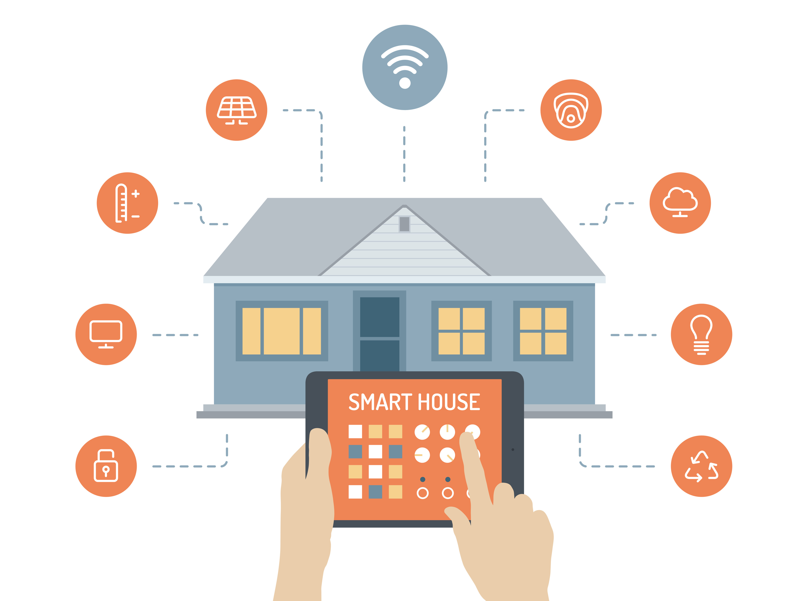

Welcome to my web page on IoT applications. As an intermediate web developer, I have gained knowledge and experience in developing web-based solutions for a variety of applications. In this web page, I would like to introduce you to the exciting world of IoT applications and how they are transforming various industries.
MEAN is an acronym that stands for MongoDB, ExpressJS, AngularJS, and Node.js, which are all technologies used for web development. This full-stack JavaScript solution provides everything needed to build web applications, both on the front end and back end. MongoDB is a NoSQL database that uses a document-oriented format, while ExpressJS is a web application framework running on Node.js. AngularJS is a front-end framework that creates dynamic user interfaces, and Node.js is a JavaScript runtime environment for server-side development. The combination of these technologies makes MEAN a popular choice for full-stack web development...
The MEAN stack (MongoDB, ExpressJS, AngularJS, and Node.js) can be utilized to develop a smart lighting solution. MongoDB can store information such as lighting schedules, user preferences, and device status, while ExpressJS can handle the backend tasks like controlling the lighting devices, processing requests, and communicating with other systems. AngularJS can create a user interface for viewing schedules and controlling lighting, and Node.js can run the server-side logic with high processing power and scalability. Using the MEAN stack for a smart lighting system provides a comprehensive solution with a user-friendly interface and versatile backend functionality.
The MEAN stack (MongoDB, ExpressJS, AngularJS, and Node.js) can be used to develop smart heating systems . MongoDB can store temperature readings, user preferences, and system settings, providing a central database. ExpressJS can handle backend logic and communication with the heating system, AngularJS can create a user-friendly interface for viewing temperature readings and controlling the system, and Node.js can run the server-side logic for processing data and handling user requests. Using the MEAN stack for a smart heating system would provide a flexible, scalable solution with a dynamic user interface.
IoT (Internet of Things) applications are systems that enable devices and sensors to communicate with each other over the internet, exchanging data and triggering actions. These applications are being used in various industries such as healthcare, manufacturing, transportation, and more, to improve efficiency, reduce costs, and enhance customer experiences.
Here are some examples of IoT applications: